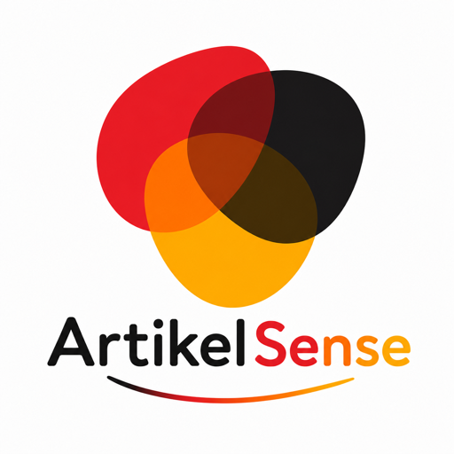

ArtikelSense / Learning product

Stop memorizing.
Start recognizing.
ArtikelSense · Sep 2026 – PresentProduct development
German articles, learned through patterns. ↗
An Android app that teaches German noun articles through recognition patterns, practice, and quizzes. I develop the Java/Spring Boot backend and React/TypeScript client with Codex assistance.
How I’m building it
- The problem
- Help learners recognize useful noun patterns and practice exceptions instead of relying only on isolated memorization.
- My contribution
- Develop the backend and client, including guided practice, quizzes, review flows, and saved learning progress.
- Technical decisions
- The server controls the learning journey and progress. Resumable sessions and idempotent answer submission prevent duplicate progress updates when a request is retried.
- Delivery
- GitHub Actions runs builds and tests automatically. Deployment to Google Cloud Compute Engine is manual. Codex supports implementation; I review and test changes.
- Current stage
- Google Play closed testing. The repository is private; the public product website explains the app.